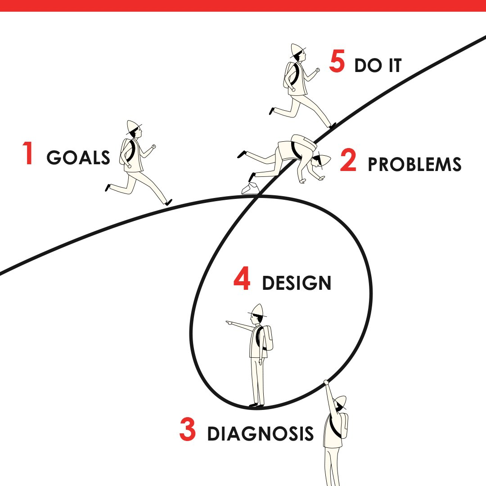
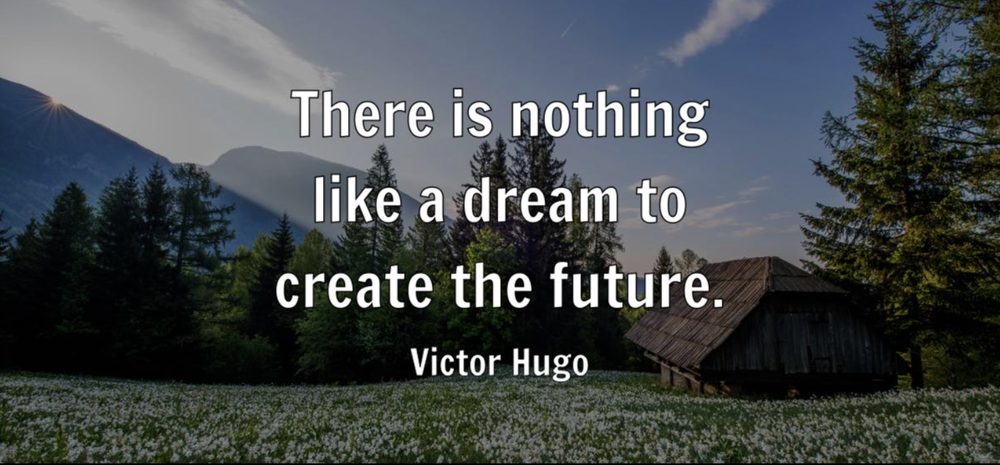

Data science is a cross-disciplinary field that integrates mathematics, computer science, and domain-specific knowledge. I am interested in this field for both its data and science components. 'Data' represents the application of mathematics and statistics to information, which helps explain or predict human activity. 'Science' reflects its rigorous, structured, and fact-based approach to learning and understanding.

Leveraging a Python-based, open-source library with advanced marketing analytics such as mix modeling and customer lifetime value modules, enabling me to empower businesses with data-driven insights for their marketing strategies. I excel in optimizing marketing approaches by unlocking the full potential of customer data, ensuring smart and effective decision-making in dynamic market environments.

I believe that clearly defining a problem is equivalent to solving half of it. We must anticipate challenges and remain confident in our ability to find solutions.

Whether it's viewing art or creating my own, I like to reflect on what is possible and feel inspired to realize my ideas. Be the change you want to see in the world.